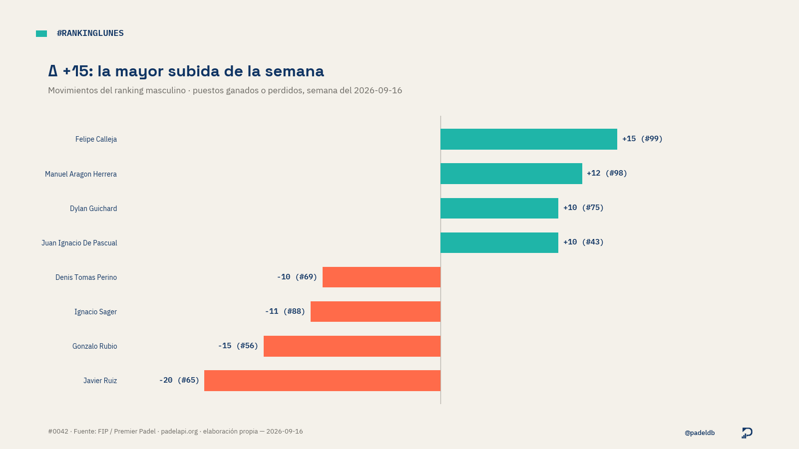
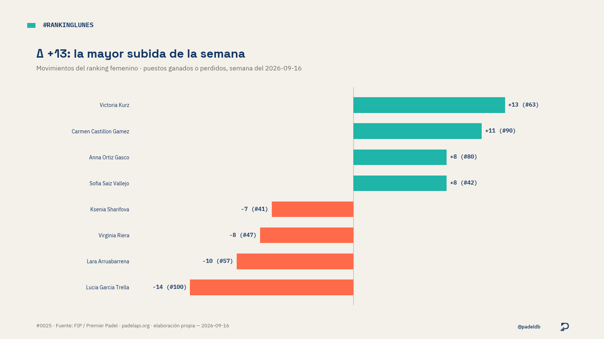

gold/ (Fase 1 del plan de montaje), servida como
HTML estático sin build. No es la web definitiva de Fase 4 (Astro + Cloudflare Pages,
con chart_factory/copy_factory y plantilla de marca completa) —
ver docs/padel-datos-01-arquitectura.md §8.
#RankingLunes — movimientos de la semana
Puestos ganados o perdidos en el top 100, última semana disponible.


Forma reciente
% de victorias y racha actual, últimas 8 semanas.
Perfil del top 100
Edad, nacionalidad, altura y lado de pista.
#ParejasEnDatos — duración
Parejas activas con más torneos jugados juntos, últimos ~180 días de datos.
Cara a cara más repetidos
Combinaciones de pareja que más veces se han enfrentado.
Mayores sorpresas por semilla
Eliminaciones de una cabeza de serie mejor situada por una peor situada.
Ganancias de la temporada
Cifras reales por torneo (padelearnings.com / padelfip.com), no una estimación por categoría.
Cobertura: 74 de 74 torneos con resultado (72 con premio verificado), incluye resultados
de respaldo para cuando padelapi oculta el ganador por su ventana móvil de ~180 días. Ver
docs/campos-prize-money-2026.md.